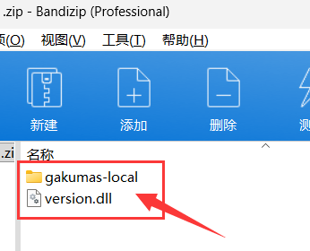
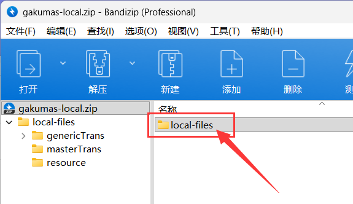
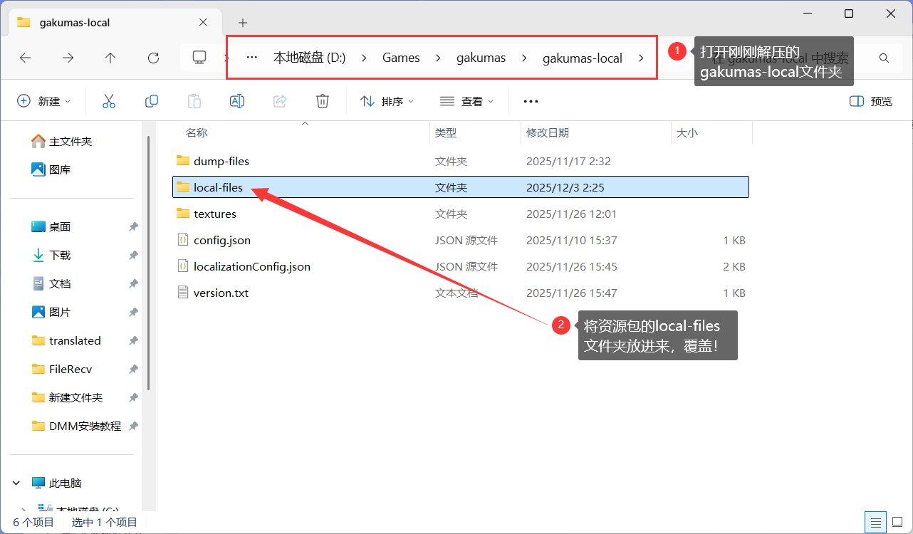
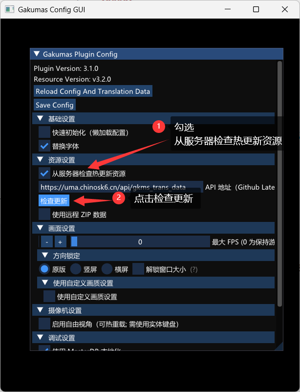
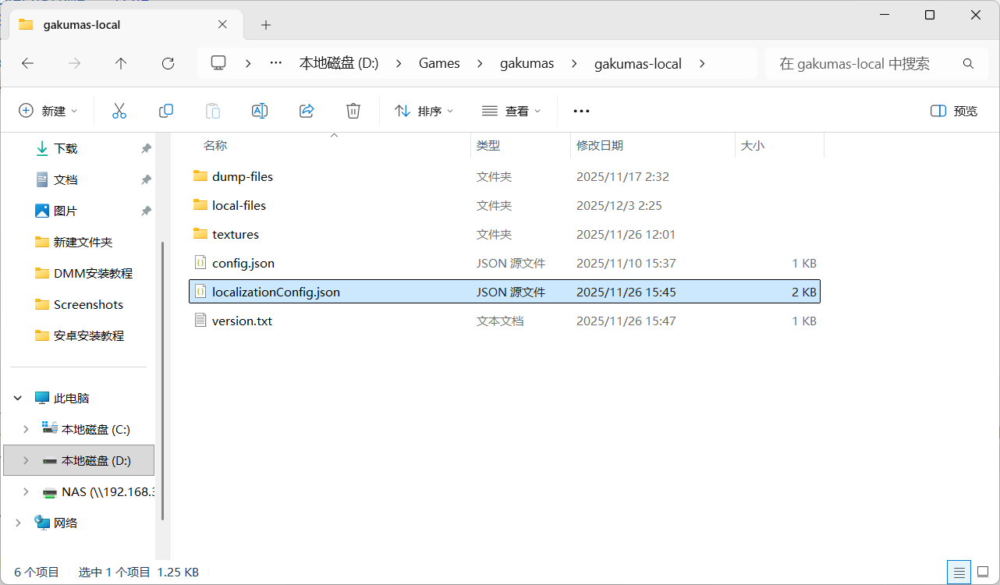
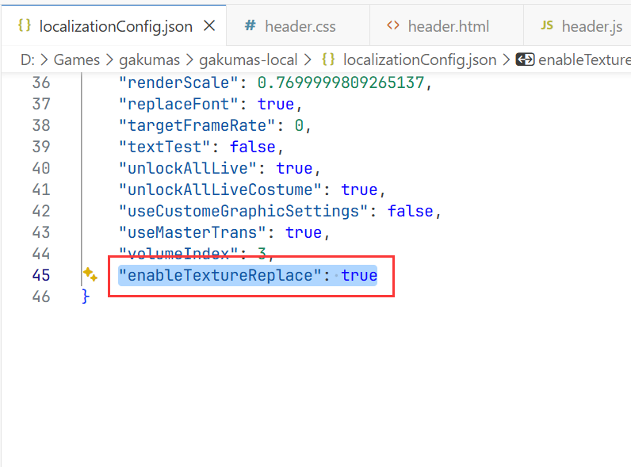
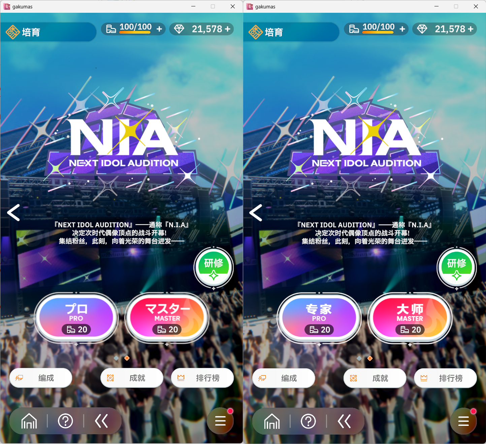

PC (DMM) 安装教程
请先在下载页获取插件与资源，再按以下步骤操作。
1打开 1.插件本体.zip
压缩包内包含 gakumas-local/ 与 version.dll。

2解压到游戏安装目录

将 gakumas-local/ 与 version.dll 解压到与 gakumas.exe 同级的游戏根目录。
3准备最新资源包
打开 2.资源更新 的最新版资源压缩包，确认其中包含 local-files/。

4将资源覆盖到插件目录
打开刚解压的 gakumas-local/，将资源压缩包中的 local-files/ 解压进来并选择覆盖。

5汉化资源更新方法
如果需要对 PC 版汉化资源进行更新，既可以参照上面第3、第4步，下载最新资源包手动替换，也可以直接在游戏内更新。
游戏内更新方法：
在游戏彻底启动后，按下 Ctrl + U 组合键，出现如图所示的弹窗。在弹窗中完成最新资源包更新后，重启游戏即可体验最新汉化资源。

开启图片替换汉化
⚠️ 特别注意：图片替换功能为实验性功能，可能会导致游戏卡顿、加载缓慢或其他性能问题。
如遇到游戏运行不流畅的情况，建议关闭此功能。非必要情况下不建议开启。
SP1打开配置文件
打开游戏根目录下的 gakumas-local 文件夹，找到 localizationConfig.json 并用记事本或其他文本编辑器打开。

SP2修改配置项
在 localizationConfig.json 的最后一行找到 "enableTextureReplace"，将值从 false 修改为 true 并保存文件。重新启动游戏即可开启图片替换功能。

SP3功能对比
← 返回主页
下图为开启图片替换功能前后的对比效果。开启后，游戏内的部分图片将替换为中文版本。
